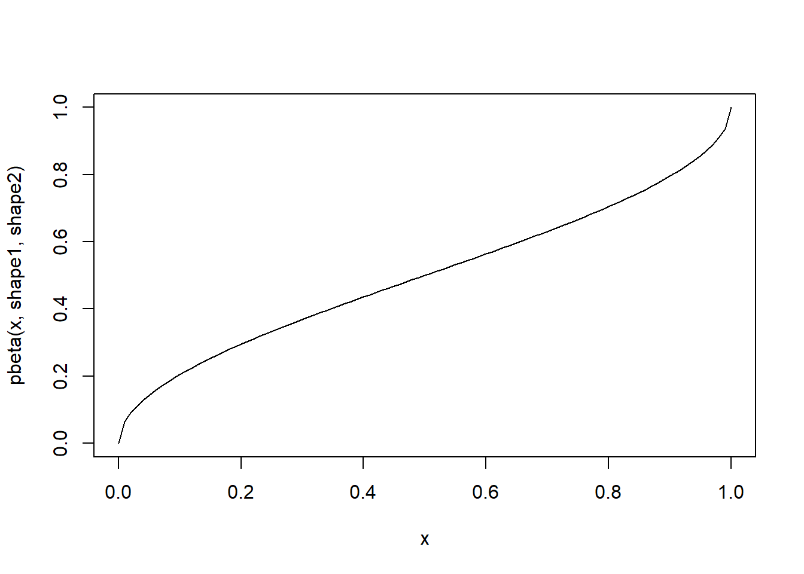

Working with Probabilities
NRES 746
Fall 2021
NOTE: for those wishing to follow along with the R-based demo in class, click here for the companion R-script for this lecture.
Note: some materials borrowed from White and Morgan’s “STATISTICAL MODELS IN ECOLOGY USING R” course
In the last class, we reviewed basic programming in R, using basic structures like the iterative loop (e.g., “for()”, “while()”) and random sampling (e.g., using the ‘sample()’ function in R) to build our own analyses from first principles. We began the course this way because the ability to understand, use, and build algorithms is absolutely fundamental to modern data analysis.
Also fundamental to modern data analysis is an ability to work with probabilities. Again, many of you will find this a very basic review, but I really want to ensure that all of us are working with solid foundations before we venture into more advanced topics.
The central points:
- Most traditional statistics use mathematical assumptions (e.g., large sample size, Gaussian errors) to ensure that test statistics follow a particular distribution
- With more computational power, we are much less limited and can feasibly model alternative data generating processes involving a wide set of probability distributions.
Basic probability rules
Classic Urn Example
Consider an Urn filled with blue, red, and green spheres. To make the example more concrete, assume the following:
- red: 104
- blue: 55
- green: 30

#########
# Classic Urn Example
n_red <- 104
n_blue <- 55
n_green <- 30
allSpheres <- c(n_red,n_blue,n_green) # create vector of urn contents
names(allSpheres) <- c("red","blue","green") # make it a named vector, for convenience!What is the probability of drawing a blue sphere?
P_blue <- allSpheres["blue"]/sum(allSpheres) # probability of drawing a blue sphere
P_blue## blue
## 0.2910053Let’s generate a vector of probabilities for drawing each type of sphere…
Prob <- allSpheres/sum(allSpheres) # probability of drawing each type of sphere
Prob## red blue green
## 0.5502646 0.2910053 0.1587302What is the probability of drawing a blue OR a red sphere?
as.numeric( Prob["blue"] + Prob["red"] ) # probability of drawing a blue or red sphere## [1] 0.8412698What is the probability of drawing a blue OR a red sphere OR a green sphere?
as.numeric( Prob["blue"] + Prob["red"] + Prob["green"] ) # P(blue OR green)## [1] 1Q: What would it mean if this didn’t sum to 1?
What is the probability of drawing a blue AND THEN a red sphere?
NOTE: in the next examples, assume that objects are replaced and that the urn is re-randomized before any subsequent draws! That is, we are “sampling with replacement”
#### Question: What is the probability of drawing a blue **AND THEN** a red sphere?
#[your command here] # P(blue AND THEN red)## [1] 0.1601299What is the probability of drawing a blue and a red sphere in two consecutive draws (but in no particular order)?
as.numeric( (Prob["blue"] * Prob["red"]) + (Prob["red"] * Prob["blue"]) ) # P(blue then red OR red then blue)## [1] 0.3202598Less-classic urn example
Now consider an urn filled with blue & red objects of two different types: spheres & cubes. To make the example more concrete, assume the following:
- red sphere: 39
- blue sphere: 76
- red cube: 101
- blue cube: 25
##########
# Urn example #2
n_red_sphere <- 39 # contents of new urn
n_blue_sphere <- 76
n_red_cube <- 101
n_blue_cube <- 25
allSpheres <- c(n_red_sphere,n_blue_sphere) # build up matrix from vectors
allCubes <- c(n_red_cube,n_blue_cube)
allTypes <- c(allSpheres,allCubes)
allTypes <- matrix(allTypes,nrow=2,ncol=2,byrow=T) # matrix of urn contents
rownames(allTypes) <- c("sphere","cube") # name rows and columns
colnames(allTypes) <- c("red","blue")
allTypes## red blue
## sphere 39 76
## cube 101 25Prob_Shape <- apply(allTypes,1,sum)/sum(allTypes) # marginal probabilities of shape
Prob_Shape## sphere cube
## 0.4771784 0.5228216Prob_Color <- apply(allTypes,2,sum)/sum(allTypes) # marginal probabilities of color
Prob_Color## red blue
## 0.5809129 0.4190871allprobs <- (allTypes/sum(allTypes))
allprobs## red blue
## sphere 0.1618257 0.3153527
## cube 0.4190871 0.1037344What is the marginal probability of drawing a red object (and why do we call it a “marginal” probability?)
Prob_Color["red"] # marginal probability of drawing a red object## red
## 0.5809129What is the joint probability of drawing an object that is both blue AND a cube? \(Prob(blue\bigcap cube)\)
as.numeric( Prob_Color["blue"] * Prob_Shape["cube"]) # joint probability of drawing a blue object that is a cube## [1] 0.2191078## NOTE: if the above answer is not correct, please correct it! And would I be asking this if it were correct? Hmmm...Q: Is this correct? If not, why?
Q: Under what circumstances would this be correct?
What is the correct answer?
## [1] 0.1037344What is the probability of drawing an object that is blue OR a cube? \(Prob(blue\bigcup cube)\)
as.numeric( Prob_Color["blue"] + Prob_Shape["cube"]) # probability of drawing something blue or something cube-shaped...## [1] 0.9419087## NOTE: if the above answer is not correct, please correct it! Q: Is this correct? If not, why? How would you compute the correct answer??
Q: What is the correct answer?
## [1] 0.8381743What is the conditional probability of drawing a blue object, given that it is a cube? \(Prob(blue|cube)\)
This can be expressed as: \(Prob(blue|cube) = Prob(blue,cube) / Prob(cube)\)
allprobs["cube","blue"] / Prob_Shape["cube"] # probability of drawing a blue object, given it is a cube## cube
## 0.1984127Now we can express the correct joint probability of drawing a blue cube in terms of conditional probabilities!
This is the proper way of computing joint probabilities when you can’t assume independence!
\(Prob(blue\bigcap cube) = Prob(cube|blue) * Prob(blue)\)
Does this now give us the correct answer?
as.numeric( (allprobs["cube","blue"] / Prob_Color["blue"]) * Prob_Color["blue"]) # probability of drawing a blue cube... using conditional probabilities## [1] 0.1037344allprobs["cube","blue"] # check answer to make sure it's right## [1] 0.1037344What is an unconditional probability?
What is the unconditional probability of drawing a blue item, regardless of shape?
\(Prob(blue|cube)\cdot Prob(cube) + Prob(blue|not cube) \cdot Prob(not cube)\)
# unconditional probability of drawing a blue item.. Seems too complicated, but this method of computing unconditional probabilities will prove useful when getting into Bayesian statistics!
uncond_prob_blue <- (allprobs["cube","blue"] / Prob_Shape["cube"]) * Prob_Shape["cube"] +
(allprobs["sphere","blue"] / Prob_Shape["sphere"]) * Prob_Shape["sphere"]
as.numeric(uncond_prob_blue)## [1] 0.4190871Prob_Color["blue"] # check to make sure we get the right answer!## blue
## 0.4190871Q: Can you interpret the above equation in words? Take a moment to try! How does this relate to the marginal probability?
Short exercise #2
What does it mean if the conditional probability of drawing a blue object (e.g., given it is a cube) is equal to the unconditional probability of drawing a blue item?
Bolker’s medical example
Suppose the infection rate (prevalence) for a rare disease is one in a million:
##########
# Bolker medical example
Prob_Disease <- c(1,999999) # disease prevalence
Prob_Disease <- Prob_Disease/sum(Prob_Disease) # probability of disease
names(Prob_Disease) <- c("yes","no") # make it a named vector!
Prob_Disease## yes no
## 0.000001 0.999999Suppose there is a test that never gives a false negative result (if you’ve got it you will test positive) but occasionally gives a false positive result (if you don’t have it, you still might test positive for the disease). Let’s imagine a low false positive rate of 1%.
Medical professionals (and patients!) often want to know the probability that a positive-testing patient actually has the disease. This quantity is known as the Positive Predictive Value or PPV. How can we compute this?
Stated another way, we want to know the conditional probability of having the disease, given a positive test result:
\(Prob(Disease|+test)\)
What do we have already?
First of all, we know the conditional probability of having a positive test result given the patient has the disease:
\(Prob(+test|Disease) = 1\)
Secondly, we know the conditional probability of having a positive test result given the patient doesn’t have the disease
\(Prob(+test|no Disease) = 0.01\)
Third, we know the unconditional probability of having the disease
\(Prob(Disease) = 0.000001\)
What is the unconditional probability of having a positive test result?
\(Prob(+test)\)
Well, we can either test positive and have the disease or we can test positive and not have the disease… If we add up both of those mutually exclusive possibilities, we get the unconditional probability of testing positive. We are conditioning out, or marginalizing disease status:
\(Prob(+test\bigcap Disease) + Prob(+test\bigcap no Disease)\)
Stated another way,
\(Prob(+test|Disease)*Prob(Disease) + Prob(+test|no Disease)*Prob(no Disease)\)
### compute the unconditional probability of testing positive
as.numeric( 1*Prob_Disease["yes"] + 0.01*Prob_Disease["no"] ) # Prob(+test|Disease)*Prob(Disease) + Prob(+test|no Disease)*Prob(no Disease)## [1] 0.01000099This quantity can be interpreted as the probability of testing positive, regardless of whether or not you have the disease.
Now, let’s use basic probability rules to compute the PPV!
Let’s summarize the scenario. So now we have:
\(Prob(+test|Disease) = 1\)
\(Prob(Disease) = 0.000001\)
\(Prob(+test) = 0.01000099\)
How can we use these components to compute what we want: \(PPV = Prob(Disease|+test)\)?
Q: What’s the the joint probability of testing positive and being infected?
Q: How do you go from there (JOINT prob of testing positive AND having the disease) to the CONDITIONAL probability of having the disease given a positive test result?
Q: What’s the PPV??
Q: So should you be worried if you get a positive test result in this case?
Re-structure your PPV equation so that you consider the positive test result to be the “Data” and the positive disease status to be the “Hypothesis”
Can you guess the name of this simple rule of probability, which is at the core of Bayesian statistics?
Frequentism vs. Bayesianism (an aside)
What is Frequentism?
Under this paradigm, the true answers are hidden behind a veil of sampling variability. That is, if we had perfect knowledge (infinite sample size) we would know the answers we seek. Random sampling errors prevent this level of certainty. However, since the parameter is fixed (but unknown) we cannot consider unknown parameters as being random quantities (derived from a probability distribution). However, if we know the frequency with which random sampling yields anomalies of various magnitudes, then we can understand and control for the effects of sampling variability. For example, we can set an \(\alpha\) level (false-positive rate that we can live with) and then make a “positive” conclusion about a test only if random sampling variability could account for the observed effect size with a frequency at or below the pre-determined \(\alpha\) level.
What is Bayesianism
Given a set of plausible models for describing a system, Bayesian statistics can tell us the degree to which we can believe each model generated the observed data versus the other models in the candidate set. If we fit a regression model, Bayesian statistics can tell us the degree to which we can trust that the true regression parameter \(\beta_{1}\) is above zero. Since probability is interpreted as a degree of belief, we can legitimately consider unknown parameters as being random quantities (derived from a probability distribution). In many ways, Bayesian analyses allow us to interpret uncertainty and probability in the way many of us intuitively want to – as degrees of belief about alternative hypotheses (e.g., possible model structures or parameter values). That said, Bayesian analyses require specifying a prior probability on all fitted parameters and models. This can pose a philosophical problem: what if you don’t have any prior knowledge? Furthermore, the interpretation of probability itself can get us in philosophical hot water; because Bayesian probabilities are best interpreted as “degree of belief”, your conclusions from the same data could be very different from mine… But maybe this is okay – at least these differences can be formalized in terms of different prior distributions!
Which paradigm is better?
The pragmatic analyst admits that they are both useful, and uses both methods freely!!
Question for pondering:
Likelihood, which is probably the central concept of this course, is defined as: \(Prob(data|hypothesis)\). Is the notion of a likelihood inherently Bayesian or Frequentist?

Q: Can you write out the sun-exploding problem in terms of Bayes Rule? Can you solve it… approximately?
Let’s make a deal!
This is a classic example for introducing Bayes rule… But it’s fun so we’re gonna do it anyway!
The setup: you are in a game show, called Let’s Make a Deal! There are three doors in front of you. One hides a fancy prize and the other two hide goats.

Monty Hall problem, setup
You pick door 1. Before you see what’s behind door 1, the host, Monty Hall, opens door 2 to reveal a goat. Now you have two choices:
Choice “STAY”: stick with your original choice of door 1
Choice “SWITCH”: switch to door 3 (you wouldn’t switch to door 2 of course. You don’t like goats, and you can’t keep it even if you did)
Should you switch?
NOTE: no matter which door you choose at first, Monty will always open one of the other doors, and will never open the door with the prize (he knows where the prize is, after all).
Here’s a photo of Monty, just so you know who you’re dealing with:
Monty Hall
Given the new info, we now know the prize isn’t behind door 2. We want to know \(Prob(door1|info)\) and \(Prob(door3|info)\). Let’s first focus on the first one- the posterior probability of the prize being behind door 1, given the new information we now have (Monty opened door 2).
Let’s say our hypothesis is that the prize is behind door 1 – we can call this the “stay” hypothesis, because if we believed this were the case, we had better keep door 1 as our choice and not switch to door 3!
As for the priors (knowledge about which door the prize is behind at the beginning of the game), let’s assign a discrete uniform distribtuion (equal probability mass assigned to each of a discrete set of possibilities). So the prior probability of the prize being behind door 1 is \(\frac{1}{3}\).
\(Prob(door1) = 1/3\)
The new data/intel we have (\(info\)) is that Monty opened door 2 to reveal a goat. Let’s apply Bayes rule!!
\(Bayes \: rule = \frac{Prob(Data|Hypothesis) \cdot Prob(Hypothesis)}{Prob(Data)}\)
The first component of the numerator above, \(Prob(Data|Hypothesis)\) is known as the likelihood.
So… what is the likelihood of the data (Monty opened door 2) under the “stay” hypothesis (the hypothesis that the prize is behind door 1, which we originally chose), \(Prob(info|door1)\)?
The second component of the numerator, \(Prob(Hypothesis)\), is known as the prior. We already know this is equal to 1/3.
The denominator in Bayes theorem – in this case, \(Prob(info)\) – is known as the unconditional probability of the data, or the normalizing constant (meaning it ensures that the posterior distribution is a true probability distribution).
One way to get the unconditional probability of the data is to sum up the (mututally exclusive) joint data probabilities across all possible models:
\(Prob(info) = Prob(info,door1) + Prob(info,door2) + Prob(info,door3)\)
–or–
\(Prob(info) = Prob(info|door1)\cdot Prob(door1) + Prob(info|door2)\cdot Prob(door2) + Prob(info|door3)\cdot Prob(door3)\)
In plain English: either A (Monty opened door 2 and prize is behind door 1) is true or B (Monty opened door 2 and prize is behind door 2) is true or C (Monty opened door 2 and prize is behind door 3) is true – and these possibilities are mutually exclusive).
One of these possibilities is patently false a priori!
So what’s our degree of belief about the prize being behind door 1 (the “stay” hypothesis)?
What’s our degree of belief about door 3 (the “switch” hypothesis)?
What should we do if we want to maximize our probability of winning the game??
Does this probability calculus convince you? Another way to convince yourself would be to simply simulate this result to convince ourselves that switching is the right move. Here is an R function for doing this:
##### Monty Hall simulation code (code by Corey Chivers 2012)
#####################################################
# Simulation of the Monty Hall Problem
# Demonstrates that switching is always better
# than staying with your initial guess
#
# Corey Chivers, 2012
#####################################################
monty<-function(strat='stay',N=1000,print_games=TRUE){
doors<-1:3 #initialize the doors behind one of which is a good prize
win<-0 #to keep track of number of wins
for(i in 1:N){
prize<-floor(runif(1,1,4)) #randomize which door has the good prize
guess<-floor(runif(1,1,4)) #guess a door at random
## Reveal one of the doors you didn't pick which has a bum prize
if(prize!=guess)
reveal<-doors[-c(prize,guess)]
else
reveal<-sample(doors[-c(prize,guess)],1)
## Stay with your initial guess or switch
if(strat=='switch')
select<-doors[-c(reveal,guess)]
if(strat=='stay')
select<-guess
if(strat=='random')
select<-sample(doors[-reveal],1)
## Count up your wins
if(select==prize){
win<-win+1
outcome<-'Winner!'
}else
outcome<-'Loser!'
if(print_games)
cat(paste('Guess: ',guess,
'\nRevealed: ',reveal,
'\nSelection: ',select,
'\nPrize door: ',prize,
'\n',outcome,'\n\n',sep=''))
}
cat(paste('Using the ',strat,' strategy, your win percentage was ',win/N*100,'%\n',sep='')) #Print the win percentage of your strategy
}Now we can test out the different strategies.
###########
# run the monty hall code!
monty(strat="stay",print_games=FALSE)## Using the stay strategy, your win percentage was 35.5%And try a different strategy…
###########
# run the monty hall code!
monty(strat="switch",print_games=FALSE)## Using the switch strategy, your win percentage was 64.6%What if we had more prior information – say, there was a strong smell of goat coming from door 1? The priors would be different ( \(Prob(1) > Prob(3)\) ). The likelihoods would remain exactly the same, but the posterior for door 1 would be greater than 1/3. How strong would the odor have to be to convince you to stay rather than switch?
That’s one benefit of the Bayesian approach – you can integrate all the available information! Think about the XKCD comic above… Does it make sense that the Bayesian approach might have less of a tendency to produce “ridiculous” answers?
Probability distributions
Discrete vs. continuous
In discrete distributions, each outcome has a specific probability (like the probability of flipping a coin 10 times and getting 4 heads). For example, let’s consider the Poisson distribution
#################
# Probability distributions
mean <- 5
rpois(10,mean) # the random numbers have no decimal component## [1] 7 4 6 8 3 3 3 6 6 9 # plot a discrete distribution!
xvals <- seq(0,15,1)
probs <- dpois(xvals,lambda=mean)
names(probs) <- xvals
barplot(probs,ylab="Probability",main="Poisson distribution (discrete)")
barplot(cumsum(probs),ylab="Cumulative Probability",main="Poisson distribution (discrete)") # cumulative distribution
sum(probs) # just to make sure it sums to 1! Does it??? ## [1] 0.999931In continuous distributions, the height of the curve corresponds to probability density, \(f(x)\), not probability \(Prob(x)\). This is because the probability of getting exactly one value in a continuous distribution is effectively zero. This arises from the problem of precision. The sum of the probability distribution must be 1 (there is only 100% of probability to go around). In a continuous distribution, there are an infinite number of possible values of x. So any individual probability is always divided by infinity, which makes it zero. Therefore we have to talk about probability density, unless we want to specify a particular range of values – we can’t calculate \(Prob(x = 5)\), but we can calculate \(Prob(4 < x < 6)\) or \(Prob(x > 5)\). Let’s consider the beta distribution:
#########
# continuous distributions
shape1 = 0.5
shape2 = 0.5
rbeta(10,shape1,shape2)## [1] 0.92657121 0.98438854 0.45930964 0.97688015 0.07656494 0.81475334
## [7] 0.99667411 0.84507683 0.09710872 0.50202627curve(dbeta(x,shape1,shape2)) # probability densitycurve(pbeta(x,shape1,shape2)) # cumulative distributionintegrate(f=dbeta,lower=0,upper=1,shape1=shape1,shape2=shape2) # just to make sure it integrates to 1!!## 1 with absolute error < 3e-06Some other probability distribution terms:
Moments – descriptions of the distribution. For a bounded probability distribution, the collection of all the moments (of all orders, from 0 to ∞) uniquely determines the shape of the distribution.
The zeroth central moment (\(\int \left ( x-\mu \right )^{0}Prob(x)\partial x\)) is the total probability (i.e. one),
The first central moment (\(\int \left ( x-\mu \right )^{1}Prob(x)\partial x\)) is \(\mu - \mu = 0\).
The second central moment (\(\int \left ( x-\mu \right )^{2}Prob(x)\partial x\)) is the variance.
The third central moment (\(\int \left ( \left (x-\mu \right )/\sigma \right )^{3}Prob(x)\partial x\)) is the skewness.
The fourth central moment is the kurtosis.
Parameters – the values in the probability distribution function, describing the exact shape and location of the distribution. Parametric statistics require assuming certain things about distributions & parameters, while nonparametric stats do not require these assumptions.
Some probability distributions
The Bolker book goes through the main distributions we will be using in this course. Pay particular attention to the type of process described by each distribution. The key to using these distributions to represent random variables is to figure out which statistical process best matches the ecological process you’re studying, then use that distribution. e.g., am I counting independent, random events occurring in a fixed window of time or space (like sampling barnacles in quadrats on an intertidal bench)? Then the distribution of their occurrence is likely to follow a Poisson or Negative Binomial distribution.
Binomial
##########
# Binomial
size <- 10
prob <- 0.3
rbinom(10,size,prob)## [1] 4 2 4 3 4 4 1 3 2 5xvals <- seq(0,size,1)
probs <- dbinom(xvals,size,prob)
names(probs) <- xvals
barplot(probs,ylab="Probability",main="Binomial distribution")
barplot(cumsum(probs),ylab="Cumulative Probability",main="Binomial distribution") # cumulative distribution
sum(probs) # just to make sure it sums to 1! Does it???## [1] 1Normal
#########
# Gaussian
mean = 7.1
stdev = 1.9
rnorm(10,mean,stdev)## [1] 5.940470 7.104222 7.791892 9.509691 8.721818 7.469465 6.200863
## [8] 3.886482 8.149301 4.784108curve(dnorm(x,mean,stdev),0,15) # probability densitycurve(pnorm(x,mean,stdev),0,15) # cumulative distribution
integrate(f=dnorm,lower=-Inf,upper=Inf,mean=mean,sd=stdev) # just to make sure it integrates to 1!!## 1 with absolute error < 1.1e-05Exercise:
Visualize the following distributions as above: Gamma, Exponential, Lognormal, Negative Binomial.